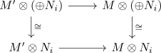

M-flat module and sum
Proposition
Let $A$ be a ring and $M$ an \(A\)-module. Suppose $N_i$ are M-flat modules, then so is $\oplus N_i$
Proof
follows from
- tensor functor as right exact functor
- right exact functor as additive functor
- limit functor as left exact functor
- left exact functor between abelian categories preserves monomorphisms
where for a submodule inclusion $M \hookrightarrow M'$
